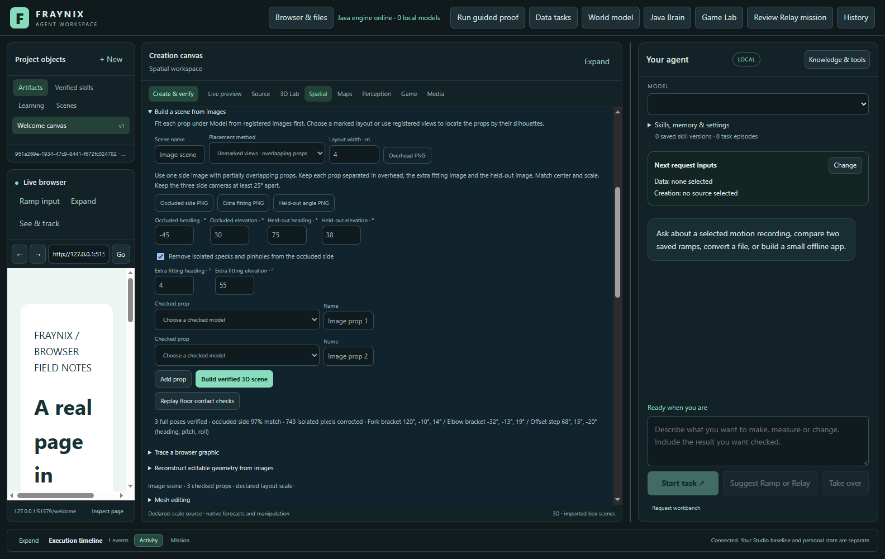
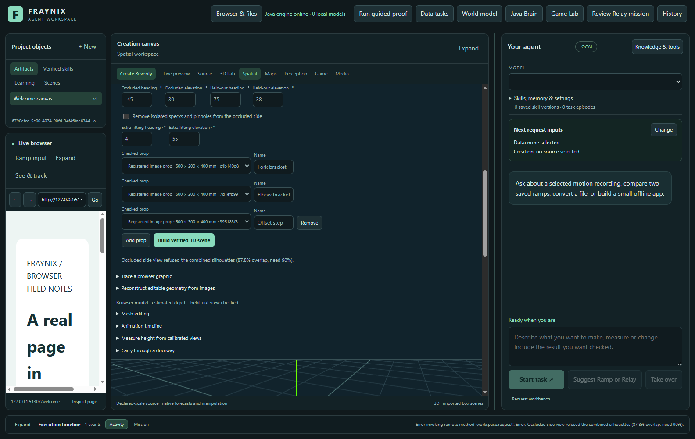

Recover overlapping props with noisy side masks
Four known scenes test varied depth order and isolated noise. A separate angle verifies each pose before saving.

The workspace recovers a scene after correcting isolated mask noise

The same noisy side is refused with cleanup turned off
The recovered scene and original mask are rechecked after restart
System files
Open source